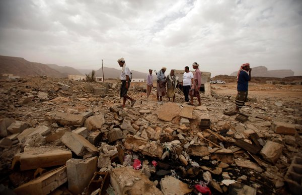
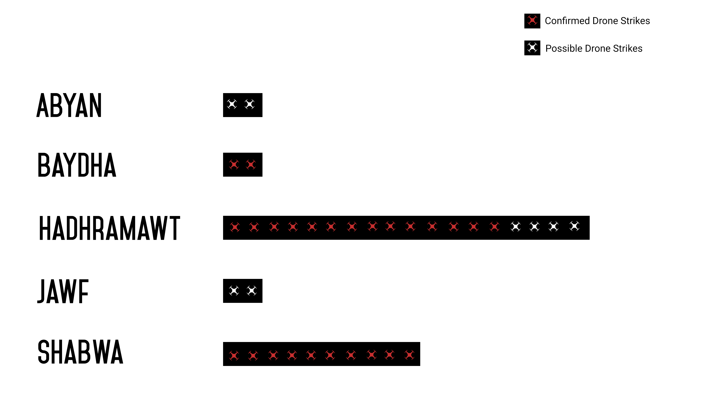
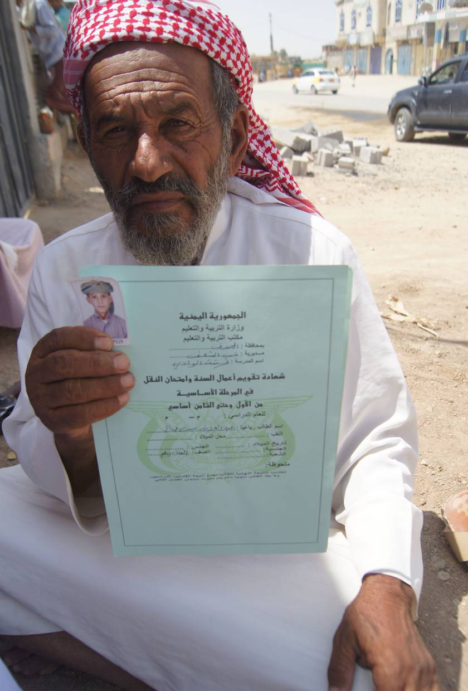
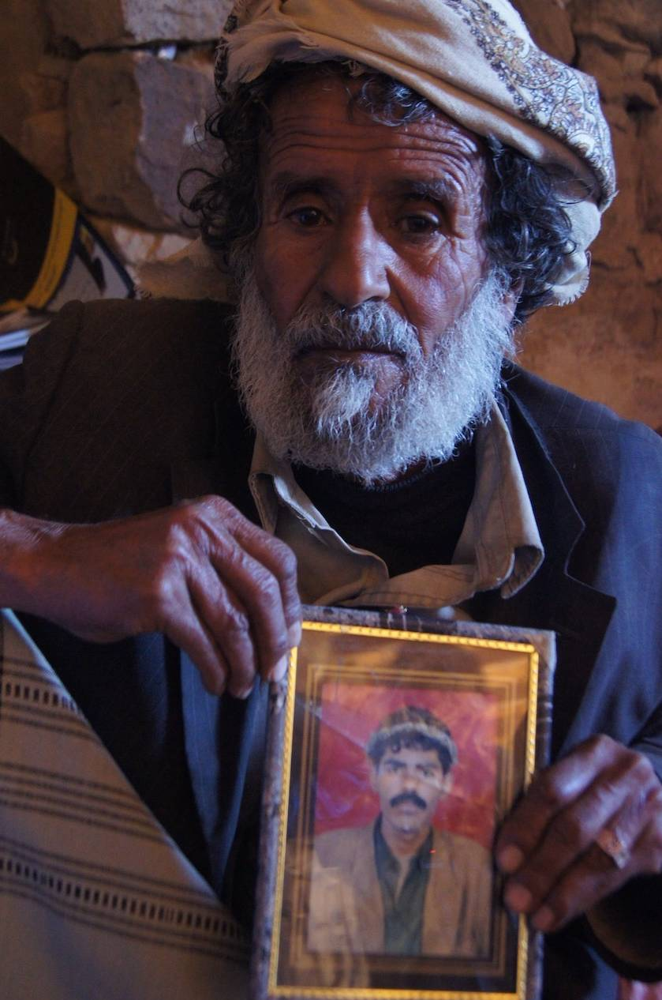

The first known U.S. drone strike outside of Afghanistan hit Yemen in 2002, killing six people.
6
In 2011, the U.S. carried out its second reported attack in Yemen after a pause of nearly a decade.
2011
Since then, the U.S. has carried out over 130 drones strikes in the country
130
Drone strikes have fallen on several provinces and cities throughout Yemen. From the first strike in 2002, which was launched in Marib to the most recent drone strike on April 26, 2016 in Abyan.
"The real advantage of unmanned aerial systems is that they allow you to project power without projecting vulnerability."
Over the past decade, more than 750 people have been killed by unmanned aerial systems in Yemen alone. That number is even higher for countries like Pakistan, where an estimated 4,000 people have been killed since 2004.
“The question of sovereignty now assumes an aeropolitical dimension: who is it that holds the power over the air and over the airwaves as well?"
The U.S. has launched hundreds of drone strikes in Yemen over the past six years. In 2012, the deadliest year for drone warfare in Yemen, over 50 drone strikes were launched––killing over 240 people and injuring a hundred others.
“However, the ‘kill list’ never gets shorter, the names and faces are simply replaced. Caught up in an endless spiral, the eradication strategy is, paradoxically, destined never to eradicate."
On December 12, 2014, an American drone mistakenly targeted a wedding convoy in al-Baydha province in Yemen. An estimated 14 people were killed and 22 others were injured. All those that were killed in the strike were supportive of the Yemeni government's anti-terror campaigns.
“The psychological effect of this unequal killing is mitigated by the fact that there exists a long-standing tradition of fighting peoples militarily and ethnically inferior in which it is proper that the latter die in much greater numbers.”
“Once the remotely controlled machine becomes a weapon of war, it is the enemy who is treated as a dangerous material...Asymmetrical warfare becomes radicalized, unilateral. Of course people would still die, but only on one side.”

The rubble of a building that was destroyed in Yemen by a drone strike in 2011 against Qaeda militants, one of the many drone strikes launched in the country during that year.
"Our villages are poor. No education, no hospitals, no roads, nor any services. Of all the progress and advances in the world, only these deadly missiles reached us." Mohammed Nasser al-Jarrah
Number of Strikes (2015-2016) by Province


Abdulaziz was in the wrong place at the wrong time. The 10-year-old was killed in a strike in June 2013 in al-Jawf. Already in the 7th grade, he was bright for his age. The school certificate his father proudly held up showed that he had excelled in his Quran and Arabic language exams that year. He passed his English class, too.
Total Number of Strikes (2011-2016)
"We were in a wedding, but all of a sudden it became a funeral. We have nothing, not even tractors or other machinery. We work with our hands. Why did the United States do this to us?" Abdullah Mabkhut al-Amri

Aref, 30, and married with seven children, was out celebrating a wedding last December when he was killed. Wedding convoys are a tradition in Yemen called a zafa, and around 11 vehicles were taking the bride and groom back to the groom's village, Jishm. Four missiles fired from a drone hovering above the convoy killed Aref, along with 11 others.